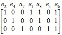
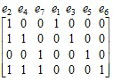
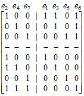

электронный
ресурс по учебной дисциплине
1-40 02 01 «Вычислительные машины, системы и сети»
|
||
| Оглавление | Программа | Теория | Практика | Контроль знаний | Об авторах | ||
Г л а в а 5
Циклы и разрезы
5.1. Цикломатическое число графа
Для исследования циклов в графах необходимо ввести понятие дерева, которое является особым видом графа, часто используемым в различных приложениях. Приведем три эквивалентных определения:
1. Дерево – это связный граф, число ребер которого на единицу меньше числа вершин.
2. Дерево – это связный граф, не имеющий циклов.
3. Дерево – это граф, в котором каждая пара вершин связана одной и только одной цепью.
Граф, каждая компонента связности которого является деревом, называется лесом.
Пусть G – неориентированный граф с п вершинами, т ребрами и р компонентами связности. Если G – связный граф (р = 1), то он имеет остовный подграф в виде дерева. Такой подграф называется остовным деревом. Число ребер в остовном дереве п – 1. Число ребер в остовном лесе п – р.
Определим ν(G) = m – n + p и ρ(G) = n – p. Число ν(G) называется цикломатическим числом, а ρ(G) – коцикломатическим числом.
В теории электрических цепей моделью электрической схемы может служить мультиграф, вершины которого соответствуют узлам схемы, а ребра – электрическим цепям между узлами. Тогда ν(G) представляет число независимых круговых токов, протекающих в схеме, а ρ(G) – число независимых разностей потенциалов между узлами.
5.2. Базис циклов
Рассмотрим остовное дерево Т некоторого связного графа G = (V, E). Добавление одного ребра из множества Е к Т приводит к появлению точно одного простого цикла, состоящего из добавленного ребра и ребер дерева Т, лежащих на единственной цепи, соединяющей в Т концы данного ребра. Число получаемых таким образом циклов в графе G есть m – n + 1, что совпадает с цикломатическим числом ν(G) графа G.
Каждый из этих циклов имеет ребро, не принадлежащее никакому другому из них. В этом смысле они независимы. Множество циклов, определяемых таким образом с помощью остовного дерева, называется базисом циклов графа G, а сами циклы, принадлежащие базису, – фундаментальными циклами. Любой цикл, не принадлежащий базису, может быть выражен в виде линейной комбинации фундаментальных циклов. Это означает следующее.
Всякий цикл графа G представим т-мерным булевым вектором, в котором i-я компонента имеет значение 1 или 0 в зависимости от того, принадлежит или нет i-е ребро данному циклу. Тогда любой цикл можно выразить как покомпонентную сумму по модулю 2 векторов, представляющих фундаментальные циклы (сумма по модулю 2 определяется следующим образом: 0 ⊕ 0 = 0, 0 ⊕ 1 = 1, 1 ⊕ 0 = 1, 1 ⊕ 1 = 0).
Для примера рассмотрим граф, изображенный на рис. 5.1. Выделенные ребра в нем образуют остовное дерево. Оно определяет три фундаментальных цикла – это цикл, проходящий через вершины v1, v2, v3, v5; цикл, проходящий через вершины v2, v3, v5; и цикл, проходящий через вершины v3, v4, v5. Возьмем два последних цикла. Их линейная комбинация представит цикл, проходящий через вершины v2, v3, v4, v5 и не являющийся фундаментальным:
Заметим, что базис циклов определяется неоднозначно и зависит от выбранного остовного дерева. Заметим также, что цикл, представляющий собой линейную комбинацию фундаментальных циклов, не обязательно простой. Например, линейная комбинация всех трех фундаментальных циклов графа на рис. 5.1 является циклом, который проходит два раза через вершину v5.
Рис. 5.1. Граф с выделенным остовным деревом
5.3. Базис разрезов
Разрезом графа называется множество его ребер, удаление которых увеличивает число компонент связности графа. Будем вести речь только о минимальных разрезах, т. е. о таких разрезах, каждый из которых перестает быть разрезом при удалении из него любого ребра, и под разрезом будем понимать именно минимальный разрез.
Разрез графа связан с его остовным деревом. Остовное дерево представляет минимальное множество ребер графа, связывающее все его вершины, а разрез – минимальное множество ребер, разделяющее вершины. Очевидно, любое остовное дерево графа должно иметь хотя бы одно общее ребро с каждым разрезом.
Пусть в связном графе G, число вершин которого п, выделено остовное дерево Т. Назовем фундаментальным разрезом каждый из п – 1 разрезов, который содержит одно и только одно ребро, принадлежащее дереву Т. Таким образом, каждое ребро е дерева Т определяет фундаментальный разрез, который составляют, кроме ребра е, все ребра графа G, не принадлежащие дереву Т, но входящие в фундаментальные циклы, содержащие е. Действительно, чтобы разделить вершины, связанные ребром е, надо удалить е и разорвать все цепи, связывающие данные вершины помимо ребра е. Каждая такая цепь вместе с ребром е образует фундаментальный цикл.
Множество фундаментальных разрезов графа G называется базисом разрезов графа G. Так же, как любой цикл представляется линейной комбинацией фундаментальных циклов, любой разрез графа G представляется линейной комбинацией его фундаментальных разрезов.
В графе на рис. 5.1 множества ребер {е2, е3, е4} и {е2, е4, е5, е6, е7} представляют собой фундаментальные разрезы, а разрез {е3, е6, е7} – их линейную комбинацию. В векторном представлении это выглядит следующим образом:
5.4. Матрицы циклов и разрезов
Пусть G – граф с п вершинами и т ребрами, Т – остовное дерево графа G. Матрицей фундаментальных циклов графа G называется булева матрица, состоящая из ν(G) строк, соответствующих фундаментальным циклам, и т столбцов, соответствующих ребрам. На пересечении столбца и строки имеется 1, если соответствующее ребро принадлежит соответствующему циклу, и 0 – в противном случае. Таким образом, каждая строка матрицы циклов является векторным представлением фундаментального цикла, описанным выше. При этом удобно упорядочить ребра так, чтобы в начале получаемой последовательности находились ребра, не принадлежащие дереву Т, и в том же порядке расположить определяемые ими циклы. Матрица фундаментальных циклов графа, представленного на рис. 5.1, примет тогда следующий вид:
.
Левая часть такой матрицы, состоящая из ν(G) столбцов, представляет собой единичную матрицу.
Матрица фундаментальных разрезов определяется аналогично. Это матрица с п – 1 строками и т столбцами, где строки соответствуют фундаментальным разрезам, а столбцы – ребрам. На пересечении столбца и строки имеется 1, если соответствующее ребро принадлежит соответствующему разрезу, и 0 – в противном случае. Порядок ребер при этом точно такой же, как в случае матрицы циклов, а разрезы располагаются в том же порядке, что и определяющие их ребра. Матрица фундаментальных разрезов графа на рис. 5.1 имеет следующий вид:
.
Как видно из данного примера, правая часть матрицы фундаментальных разрезов, состоящая из ρ(G) столбцов, является единичной матрицей, а левая часть совпадает с транспонированной правой частью матрицы фундаментальных разрезов. Таким образом, нахождение базиса циклов и нахождение базиса разрезов являются двойственными по отношению друг к другу задачами. Любая из представляющих эти базисы матриц получается из другой путем транспонирования.
Интересно заметить, что если приписать строки матрицы фундаментальных разрезов к матрице фундаментальных циклов, то получим квадратную матрицу, симметричную относительно главной диагонали. Эту матрицу можно разделить на такие четыре части, что левая верхняя и правая нижняя части представляют собой единичные матрицы (с единицами на главной диагонали и только на ней), а каждая из остальных двух частей является транспонированным вариантом другой:
.
В приведенной матрице прерывистыми линиями выделены упомянутые части.
| (С) БГУИР |